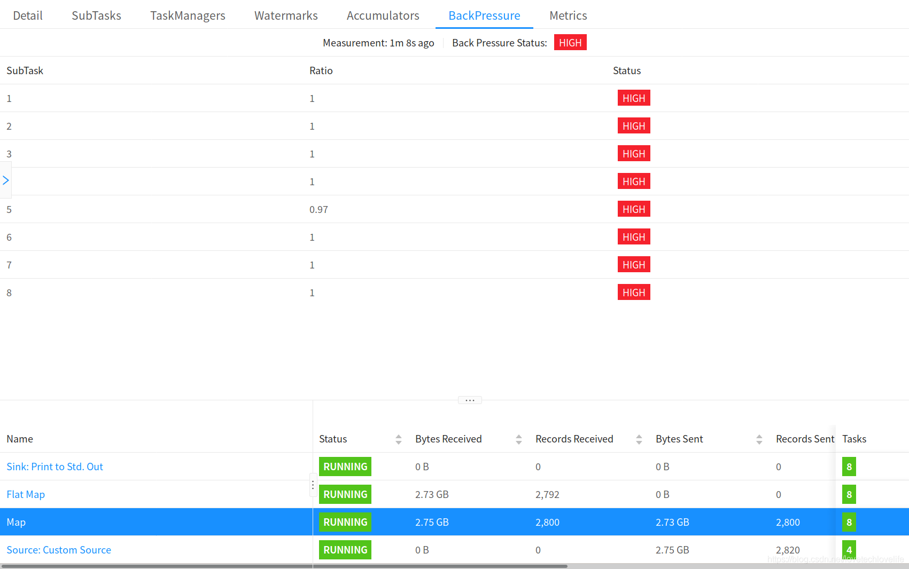

什么是背压
在流处理系统中，出现下游消费者消费数据的速率跟不上上游生产者生产数据的速率的情况，就叫做背压。
Spark Streaming中的背压
在Spark 1.5之前，流应用程序如果因为资源不足导致处理数据的速度跟不上接收数据的速度的情况，可以通过设置每秒所接收数据的最大条数来缓解这种情况。对于使用Receiver的方式可以通过设置’spark.streaming.receiver.maxRate’参数；对于使用Direct的方式设置参数’spark.streaming.kafka.maxRatePerPartition’。
Spark在1.5版本中引入了背压功能，就不再需要设置上述的速率限制了，Spark Streaming会随着处理条件的变化，自动计算所需要的速率，并进行动态地调整，但前提条件是要通过设置参数’spark.streaming.backpressure.enabled’=true来启用这个功能，因为这个功能在默认情况下是未启用的。
Flink中的背压
Flink的web界面上提供了一个标签来监控正在运行的job的背压行为。如果你看一个task的back pressure warning为High的话，那就表明产生数据的速度要比下游算子的消费速度快。拿一个简单的Source -> Sink的例子来说，就是Sink算子对上游的Source算子产生了背压。
Flink是如何监控背压的
Flink中的背压监控是通过反复获取运行任务的堆栈跟踪样本来实现的。JobManager会为job中的tasks重复调用Thread.getStackTrace()。
下面是官方提供的示意图：
如果堆栈跟踪样本显示某个task线程被卡在了某个内部方法的调用中(从网络堆栈请求缓冲)，则表明该task存在背压。
默认情况下，为了确认是否存在背压，Job Manager会每50ms为每个task触发100次堆栈跟踪。我们可以从Web界面上看到有多少堆栈跟踪被卡在了内部方法的调用中，例如，0.01表示100跟踪里面有一个被卡在该方法中。
下面是不同的比率对应的背压情况：
OK: 0 <= Ratio <= 0.10
LOW: 0.10 < Ratio <= 0.5
HIGH: 0.5 < Ratio <= 1
为了不让task managers因为频繁触发堆栈跟踪而负载过重，Web监控接口会每60秒刷新一次跟踪样本。
背压状态
我们可以在Job overview旁边找到 Back Pressure标签。
如果tasks的背压状态是OK，则表明没有背压情况。如下图：
如果状态是HIGH，则表明tasks出现了背压。如下图：
